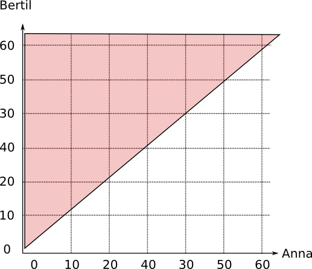
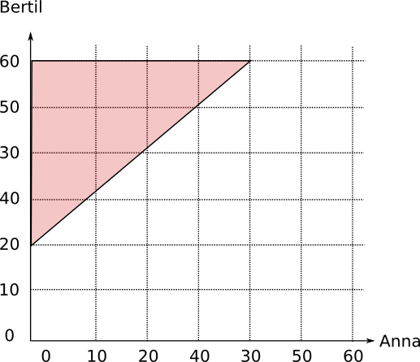
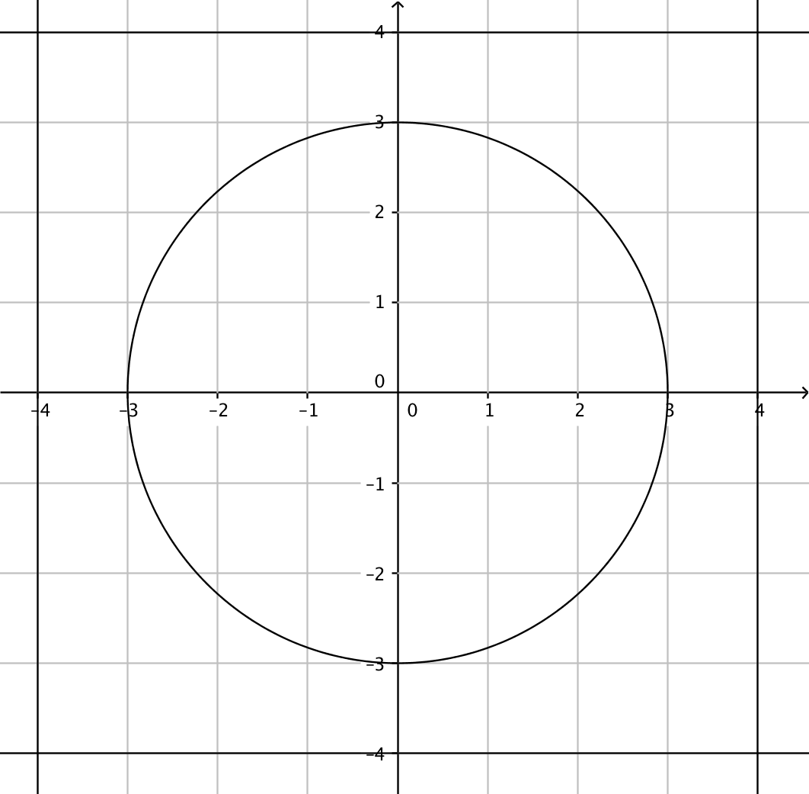

2. Geometrisk sannolikhet
Till stationen kommer ett tåg varje 15 minut. Tåget står där i 1 minut före det åker vidare. Daniel som inte vet tågets tidtabell anländer slumpmässigt till stationen.
- Bestäm sannolikheten att tåget står och väntar på honom.
- Att han får vänta högst 3 minuter på nästa tåg.
Eftersom vi har en händelse där vi inte kan tabellera alla möjligheter när Daniel anländer till stationen ser vi geometriskt på problemet. Vi löser problemet genom att se på en tallinje, där vi har sträckor om 15 minuter och 1 minut.

- Det gynnsamma fallen är 1 minut av det totala 15 minuter. Sannolikheten är \( \dfrac{1}{15} \approx 0,0. \)
- Om Daniel skall vänta högst 3 minuter på nästa tåg så är de gynnsamma fallen 4 minuter. Sannolikheten är \( \dfrac{4}{15} \approx 0,27 \).
Exempel 1 Anna och Bertil har bestämt att de skall träffas på café mellan klockan 14:00 och 15:00. Den exakta tiden blev obestämd så båda anländer slumpmässigt oberoende över när den andra anländer. Bestäm sannolikheten att
- Anna anländer före Bertil,
- Anna får vänta över 20 minuter på Bertil.
Lösning
Eftersom det finns oändligt många olika tider som Anna och Bertil kan anlända löser vi problemet med hjälp av en bild.
Vi placerar in klockslag på \( x \)- och \( y \)-axeln så att den tid då Anna anländer är på \( x \)-axeln och den tid då Bertil anländer är på \( y \)-axeln. Alla punkter i planet, som är oändligt många representerar olika tider då de anländer.

Om Anna anländer före Bertil så skall \( x < y \). Vi tar och ritar ut grafen av \( y > x \) i bilden och märker att vi får två trianglar vars area är hälften av kvadratens area. Sannolikheten för att Anna anländer före Bertil är 0,50.

Om Anna skall få vänta över 20 minuter på Bertil får vi sambandet \( y > x +20 \). Det området representeras av det område som är ovan linjen \( y=x+20 \).

För att bestämma sannolikheten jämför vi areorna, \( \dfrac{\dfrac{1}{2}\cdot 40 \cdot 40}{60\cdot 60} \approx 0,22 \).
Uppgifter
- Bestäm följande sannolikheter då alla sektorer är lika stora.

- Rött
\( P(\text{Rött})=\dfrac{2}{8} = 0,25 \).
- Vitt
\( P(\text{Vitt})=\dfrac{4}{8} = 0,50 \).
- Grönt
\( P(\text{Grönt})=\dfrac{2}{8} = 0,25 \).
Märk att vi kan också räkna \( P( \text{Grönt}) = 1 -(P(\text{Rött eller Grönt})) = 1 - (0,25 + 0,50) = 0,25 \).
- Rött
- I en korsning måste bilisterna vänta högst 40 sekunder på grönt ljus. Det är grönt ljus 20 sekunder åt gången. Vilken är sannolikheten att en bilist som kommer till korsningen skall vara tvungen att vänta
- inte behöva stanna vid trafikljuset.
Vi får \( \dfrac{20}{40+20} = 0,33\ldots \).
- skall vara tvungen att vänta högst 15 sekunder på grönt ljus.
Vi får \( \dfrac{20+15}{40+20} = 0,5833\ldots \).
- skall vara tvungen att vänta högst 30 sekunder på grönt ljus.
Vi får \( \dfrac{20 + 30}{40+20} = 0,833\ldots \).
- inte behöva stanna vid trafikljuset.
- En borttappad Legobit sökes i ett rum som är 3,0 m brett och 2,5 m brett. Vi antar att varje ställe på golvet har samma sannolikhet att Legobiten hittas där. Bestäm sannolikheten att Legobiten är högst 0,3 m från väggen.
Arean för rummet är \( 3,0 \cdot 2,5 = 7,5 \text{ m}^2 \).
Arean där Legobiten inte skall finnas är \( (3,0 - 0,6)(2,5-0,6) = 4,56 \text{ m}^2 \).
Sannolikheten är \( \dfrac{7,5-4,56}{7,5} = 0,392 \).
- Anna och Bertil skall äta lunch tillsamman men den exakta tiden glömde de bort att bestämma. De bestämde att de skall träffas mellan 11:00 och 12:00. Bestäm sannolikheten att
- båda anländer efter 11:20,
Vi skapar följande tabell
Anna 12:00 Nej Nej OK OK OK OK OK 11:50 Nej Nej OK OK OK OK OK 11:40 Nej Nej OK OK OK OK OK 11:30 Nej Nej OK OK OK OK OK 11:20 Nej Nej OK OK OK OK OK 11:10 Nej Nej Nej Nej Nej Nej Nej 11:00 Nej Nej Nej Nej Nej Nej Nej 11:00 11:10 11:20 11:30 11:40 11:50 12:00 Bertil Sannolikheten är \( P(\text{Båda efter 11:20})= \dfrac{40 \cdot 40}{60\cdot 60} = 0,444\ldots \approx 0,44 \).
- då Anna anländer efter 11:20 väntar redan Bertil på henne och
Vi skapar följande tabell
Anna 12:00 OK OK OK OK OK OK OK 11:50 OK OK OK OK OK OK Nej 11:40 OK OK OK OK OK Nej Nej 11:30 OK OK OK OK Nej Nej Nej 11:20 OK OK OK Nej Nej Nej Nej 11:10 Nej Nej Nej Nej Nej Nej Nej 11:00 Nej Nej Nej Nej Nej Nej Nej 11:00 11:10 11:20 11:30 11:40 11:50 12:00 Bertil Sannolikheten är \( P(\text{Anna efter 11:20 och Bertil väntar på henne}) = \dfrac{20\cdot 40 + \dfrac{1}{2}\cdot 40 \cdot 40}{60\cdot 60} = 0,444\ldots \approx 0,44 \).
- de hamnar att vänta minst 30 minuter på varandra.
Vi skapar följande tabell
Anna 12:00 OK OK OK OK Nej Nej Nej 11:50 OK OK OK Nej Nej Nej Nej 11:40 OK OK Nej Nej Nej Nej Nej 11:30 OK Nej Nej Nej Nej Nej OK 11:20 Nej Nej Nej Nej Nej OK OK 11:10 Nej Nej Nej Nej OK OK OK 11:00 Nej Nej Nej OK OK OK OK 11:00 11:10 11:20 11:30 11:40 11:50 12:00 Bertil Sannolikheten är \( P(\text{Någondera får vänta minst 30 min})=\dfrac{2\cdot \dfrac{1}{2}\cdot 30\cdot 30}{60\cdot 60}=0,25 \).
- båda anländer efter 11:20,
- i väljer slumpmässigt två reella tal från intervallet [0,4]. Bestäm sannolikheten att summan av dessa tal är lika med eller större än 5.
Vi får följande tabell

Sannolikheten är \( P(\text{Lika med eller större än 5})=\dfrac{\dfrac{1}{2}\cdot 3\cdot 3}{4\cdot 4} =0,28125 \approx 0,28 \).
- En bordsduk består av vita och röda ränder. De vita ränderna är 4,0 cm breda och de röda 2,0 cm breda. På bordet singlar vi ett mynt vars diameter är 26 mm. Bestäm sannolikheten för att myntet, efter att det har rullat färdig,
- är på vitt
Myntets radie är 13 mm. Vi vill att myntets mittpunkt stannar 13 mm från randen.
Vi får att sannolikheten är \( \dfrac{40 - 2 \cdot 13}{40} = 0,233\ldots \approx 0,23 \).
- stannar på bägge färgerna.
Kriteriet uppfylls om myntet stannar minst 13 mm från gränsen. Det område som inte uppfyller kriteriet är en rand som är 14 mm.
Vi får sannolikheten \( \dfrac{60-14}{60} = 0,766\ldots \approx 0,77 \).
- är på vitt
- Vi väljer slumpmässigt en punkt i ett koordinatsystem så att \( x \) och \( y \)-koordinaten väljs från intervallet \( [-4,4] \). Bestäm sannolikheten att vi inte träffar cirkeln som bestäms av \( x^2+y^2=9 \).

Den sökta sannolikheten kommer vi åt genom följande \( P(\text{Inte träffar cirkeln})=1-P(\text{Träffar cirkeln}) = 1 - \dfrac{\pi \cdot 3^2}{8\cdot 8 } = 0,5582 \approx 0,56 \).